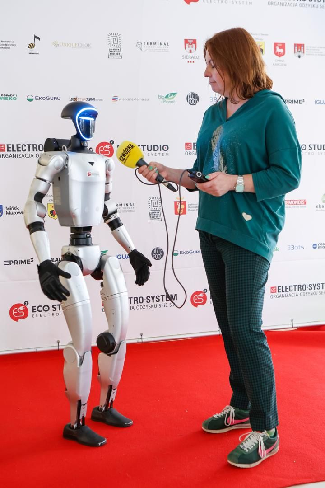
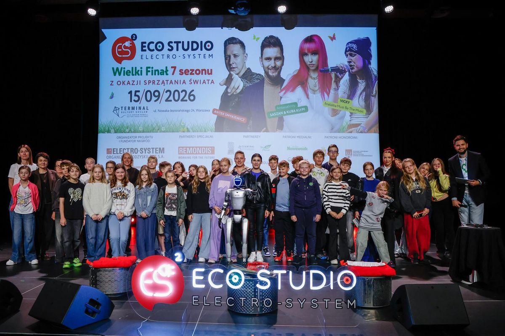
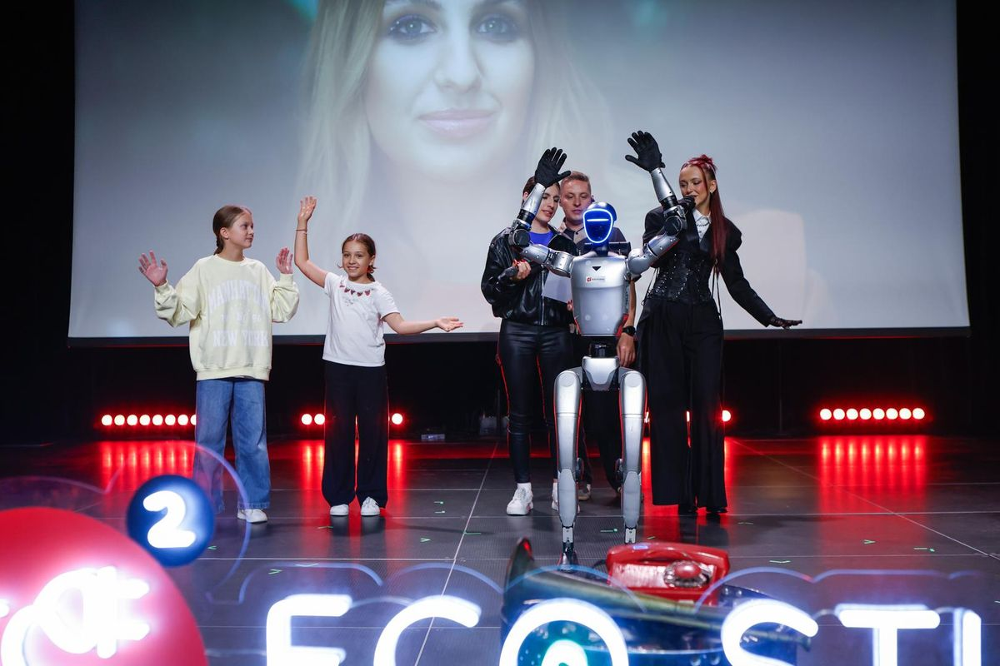
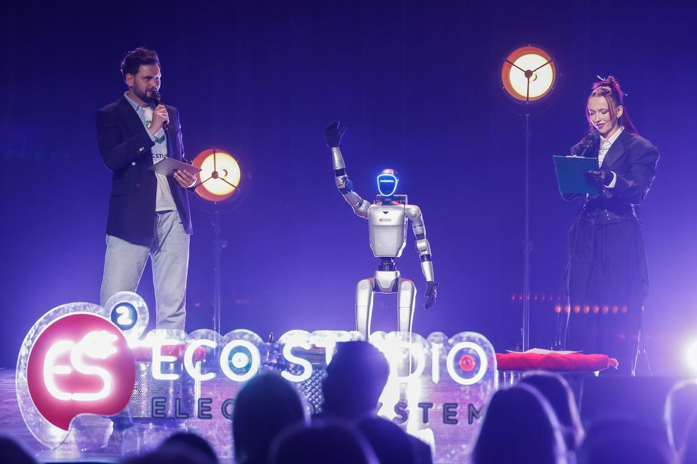

Siódmy sezon ogólnopolskiego projektu dla szkół
Eco Studio ELECTRO-SYSTEM to projekt edukacyjno-ekologiczny prowadzony przez ELECTRO-SYSTEM Organizację Odzysku Sprzętu Elektrycznego i Elektronicznego. Przez cały sezon szkoły z całej Polski rywalizują w zbiórce elektroodpadów. Sezon kończy Wielki Finał w Warszawie, z koncertami, galą i ogłoszeniem zwycięzcy.
Siódmą edycję wygrała Szkoła Podstawowa nr 5 w Płocku, której uczniowie zebrali 3280 kg zużytego sprzętu elektrycznego i elektronicznego. Na scenie finału wystąpili Saszan, Antek Smykiewicz i Vicky.
Rola robotaAtrakcja, o której napisano w nagłówku
Nasz robot humanoidalny był jedną z atrakcji finału, obok koncertów i części oficjalnej. Publicznością byli uczniowie szkół podstawowych, czyli widownia, która reaguje najmocniej i najbardziej bezpośrednio.
Najlepszym dowodem na to, jak robot wpisał się w wydarzenie, jest tytuł relacji w serwisie 4influ.pl: „Wielki finał Eco Studio ELECTRO-SYSTEM: muzyka, ekologia i robot humanoidalny połączyły młodych ludzi”. Robot nie był tłem. Trafił do nagłówka na równi z tematem przewodnim całego projektu.
Muzyka, ekologia i robot humanoidalny połączyły młodych ludzi.
– z tytułu relacji w serwisie 4influ.plZasięg, którego nie da się kupić w cenniku reklamowym
Finał relacjonowała na miejscu ekipa „Pytania na śniadanie” TVP2, program emitowany również na antenie TVP Polonia. Robot jest w odcinku „Sprzątanie świata, cz. 3” w 0:35–1:00 i 2:00–2:10. Obecne było także Polskie Radio Program 4.
Po wydarzeniu temat podchwyciła prasa ogólnopolska i portale: Onet wraz z Plejadą, Wirtualna Polska, Newsweek oraz sieć serwisów Nasze Miasto. Do tego doszły portale miejskie i gminne: Płocka, Mińska Mazowieckiego, Karczewa, Otwocka i Sieradza. Zapowiedziane są jeszcze publikacje w magazynie „Newsweek Zielony” oraz w branżowym „Odpady i środowisko”.
Logo 33bots pojawiło się na ściance sponsorskiej, a nazwa firmy w treści części publikacji, w tym w materiale gazety „Nasze Miasto”.
Eko Partner 2026
W materiale ELECTRO-SYSTEM na naszemiasto.pl organizator opisuje robota jako jedną z głównych atrakcji finału i przyznaje 33 Bots tytuł Eko Partnera 2026. Zobacz materiał organizatora.
Dlaczego to działa
Dziennikarz przyjeżdżający na galę szkolną ma do dyspozycji te same ujęcia co rok wcześniej: scena, mikrofon, dyplomy. Robot humanoidalny daje mu obraz, którego nie ma skąd wziąć. Właśnie ten obraz trafia zwykle do materiału i do tytułu.
Dla organizatora oznacza to wymierną różnicę w zasięgu przy tym samym budżecie na wydarzenie. Sponsorowi dał ekspozycję marki w materiałach, za które nikt nie płacił jak za reklamę.
Zdjęcia z finału






Wielki Finał 7. sezonu Eco Studio ELECTRO-SYSTEM, Terminal Kultury Gocław, Warszawa, 15.09.2026.
Relacja wideo z finału
Poniższy materiał przygotował organizator wydarzenia i udostępnił go do publikacji. Zachęcamy do obserwowania @ecostudioelectrosystem oraz @electrosystemorganizacjaodzysku.
Relacje z wydarzenia
- 4influ.pl: „muzyka, ekologia i robot humanoidalny połączyły młodych ludzi”
- Plejada: Saszan, Antek Smykiewicz i Vicky na finale
- Nasze Miasto: relacja z finału
- Wirtualna Polska: Płock ma powód do dumy
- Pytanie na śniadanie TVP2: „Sprzątanie świata, cz. 3” – robot w 0:35–1:00 i 2:00–2:10
- infoprodukt.pl: finał 7. edycji w Warszawie
- plock.fm: uczniowie zebrali 3280 kg elektroodpadów
Ten opis po niemiecku: Case Study Eco Studio ELECTRO-SYSTEM na 33bots.de. Robota wynajmujemy też w Niemczech i Austrii: Humanoiden Roboter mieten i Roboter mieten in Österreich.
Najczęstsze pytania
Czy robot humanoidalny sprawdza się na wydarzeniu dla dzieci i młodzieży?
Tak. Na finale Eco Studio ELECTRO-SYSTEM publicznością byli uczniowie szkół podstawowych, a robot okazał się jedną z atrakcji, które media wymieniły w nagłówkach obok koncertów. Przy młodszej widowni szczególnie ważne są zasady bezpieczeństwa w tłumie. Pilnuje ich nasz operator, który jest przy robocie przez cały czas.
Czy obecność robota zwiększa szanse na zainteresowanie mediów?
Realnie tak, choć nie jest to gwarancja. Przy finale Eco Studio ELECTRO-SYSTEM wydarzenie relacjonowała na żywo ekipa „Pytania na śniadanie” TVP2, a jeden z serwisów branżowych umieścił robota humanoidalnego wprost w tytule artykułu, obok muzyki i ekologii. Robot daje dziennikarzom obraz, którego nie mają z innych wydarzeń.
Czy logo sponsora może pojawić się przy robocie?
Tak. Branding robota (logo i kod QR na klatce piersiowej, dobrane do charakteru wydarzenia) jest wliczony w cenę wynajmu, bez dodatkowych opłat.